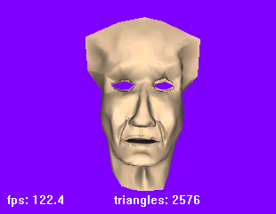
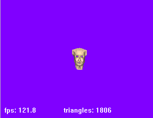

ClodFace.h
Illustrates continuous level of detail for a triangle mesh. The displayed objects (sphere, surface, model of a face) have triangle counts that increase (decrease) as the camera gets closer to (farther from) the objects.
|  |  |
|
Clod Face: ClodFace.h Illustrates continuous level of detail for a triangle mesh. The displayed objects (sphere, surface, model of a face) have triangle counts that increase (decrease) as the camera gets closer to (farther from) the objects.
|